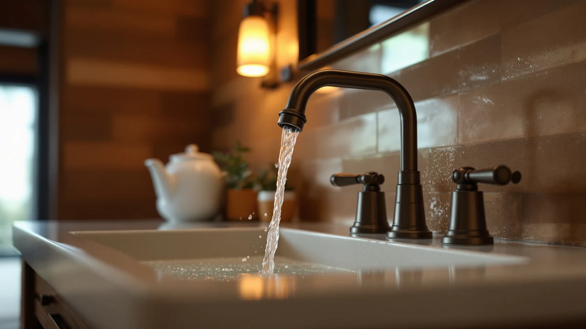

Best Bathroom Sink Faucets for Hard Water (2026)
Prices and picks verified as of August 2026. Independent, reader-supported reviews.


Quick Answer
The best bathroom sink faucets for hard water combine a scale-resistant finish with a valve simple enough to service yourself, since mineral buildup is a matter of when, not if. For most bathrooms, we like the 360-Degree Rotating Faucet Filter Sink from CaoXiong. It's a $6.55 aerator attachment, not a full faucet replacement, that filters sediment and scale before it reaches your existing spout. That makes it the cheapest way to fight hard water without calling a plumber.
Our pick: 360-Degree Rotating Faucet Filter Sink, $6.55 Check Price on Amazon
Bottom line: our top pick is the 360-Degree Rotating Faucet Filter Sink Water Faucet Filter at $6.55. The best budget option is the RNDIOZD Matte Black Bathroom Faucets at $25.98.
Things to Know Before You Buy
- Finish matters more than color: Matte black and brushed finishes hide mineral spots better day to day than polished chrome, which shows every water spot from hard water.
- Filter vs. full replacement: A faucet filter attachment tackles hard water for a few dollars, while a widespread or waterfall faucet is a bigger investment that solves flow and style at the same time.
- Brass construction resists corrosion: The faucets we compared here use a brass body under the finish coat, the combination that best resists the pitting hard water minerals cause over years of use.
- Mounting configuration is fixed: Single-hole, widespread, and centerset faucets are not interchangeable, so measure your existing holes before you buy any bathroom sink faucet.
- Cleaning routine still matters: Even the best finish needs a vinegar wipe-down every week or two in hard water areas to prevent buildup from setting in.
The best bathroom sink faucets for hard water share two things: a finish that does not show mineral spots the day after you clean it, and internal parts simple enough to descale without calling a plumber. If you have ever wiped down a chrome faucet in the morning only to find cloudy white spots by dinner, you already know why this matters. Hard water carries dissolved calcium and magnesium that crystallize on any surface it touches, and a bathroom faucet gets touched, and splashed, more than almost anything else in the house.
We compared seven bathroom sink faucets and faucet accessories built for hard water conditions, looking at finish type, valve and aerator design, mounting style, and verified owner reviews on Amazon. Prices range from $6.55 for a simple filter attachment up to $69.99 for a three-piece widespread set, so there is a fix here whether you are renting an apartment or renovating a primary bathroom. Our top recommendation is the CaoXiong 360-Degree Rotating Faucet Filter Sink, a low-cost aerator you attach to your current faucet rather than a full replacement.
You do not need to replace a working faucet just because your water is hard. In many cases, a filtering aerator or a quick finish upgrade solves the spotting and buildup problem for a fraction of the cost of a new fixture. But if your current faucet is already leaking, loose, or outdated, we also cover full single-handle and widespread replacements below that hold up better against mineral deposits than a standard chrome faucet.
Why You Should Trust Us
Ilane Tall researched and wrote this guide. Ilane covers bathroom fixtures and hardware for Best Bathroom Faucets. We do not run a physical testing lab, and we do not claim to have installed every faucet on this list in our own homes. Instead, we compared manufacturer specifications, materials, and verified Amazon owner reviews for each pick, cross-checking recurring complaints about leaks, finish wear, and hard water buildup against what each brand claims. When we recommend a bathroom sink faucet for hard water, it is because the finish, valve design, and owner feedback back that recommendation up, not because a listing looked good.
How We Picked
We started by pulling every bathroom sink faucet and faucet accessory in our database tagged for hard water use, then narrowed the list using four criteria. First, construction: we prioritized solid brass bodies over zinc alloy, since brass resists the corrosion and pitting that hard water minerals accelerate. Second, finish: matte black, brushed nickel, and similar low-gloss finishes made the cut more often than polished chrome, because they show water spots less between cleanings. Third, mounting flexibility: not every reader is doing a full faucet swap, so we made sure single-hole, widespread, and filter-attachment options were all represented. Fourth, verified reviews: hard water only makes a marginal valve worse over time, so we excluded products with a pattern of leak or seal complaints in owner reviews. We dropped products with limited or unverifiable pricing and availability data from consideration.
How We Compared
We compared each bathroom sink faucet for hard water side by side on price, listed materials, finish type, and mounting style, using the manufacturer specifications published on each Amazon listing. Where a brand listed a valve type, such as a ceramic disc cartridge, we noted it, since ceramic valves generally hold up better against mineral sediment than rubber-washer designs. Those complaints tend to surface fastest in hard water households, so we also read through verified owner reviews for each product, looking specifically for mentions of water spots, buildup, corrosion, or drips. We weighted our picks toward the products where owners with hard water reported fewer of those issues. We did not physically install or use any of these faucets ourselves; our comparisons are based on published specifications and the pattern in verified customer feedback.
Our Picks

360-Degree Rotating Faucet Filter Sink
What we like
- Filters sediment and scale before water reaches the spout
- Costs a fraction of a full faucet replacement
- 360-degree swivel head reaches both sides of the sink
Flaws but not dealbreakers
- Not a substitute for a full faucet if yours already leaks or wobbles
- Filter cartridge needs periodic replacement to keep working
| Material | Brass + finish |
| Size | — |
The 360-Degree Rotating Faucet Filter Sink from CaoXiong isn't really a faucet. It's a $6.55 aerator attachment that threads onto the spout you already have. For a household dealing with hard water, that makes it the cheapest entry point on this list: instead of paying for a new brass body and valve, you filter the sediment and scale out of the water before it ever reaches the basin. The swivel head rotates a full 360 degrees, which is useful for filling containers or rinsing wide sinks without repositioning the whole faucet.
Because it is an add-on rather than a replacement, this pick will not fix a faucet that already drips or wobbles at the base, and the internal filter cartridge needs periodic swaps to keep performing. But for renters who cannot swap out a fixture, or anyone who wants to test whether filtering solves their hard water spotting before committing to a bigger purchase, it is the lowest-risk option we compared.

Bodibeam Bathroom Sink Faucet Water
What we like
- Single-handle design simplifies temperature control
- Compact footprint suits smaller vanities and pedestal sinks
- Brass construction with a protective finish resists corrosion
Flaws but not dealbreakers
- Fewer finish options than some of the widespread picks here
- Standard single-hole mount only, not compatible with widespread setups
| Material | Brass + finish |
| Size | — |
The Bodibeam Bathroom Sink Faucet Water is a single-handle, single-hole faucet priced at $29.99, built around a brass body with a protective finish coat. For a household replacing an old, corroded chrome faucet, the brass construction is the detail that matters most: it resists the pitting and discoloration that hard water minerals cause faster in cheaper zinc-alloy fixtures. The single-lever handle also means one motion controls both flow and temperature, which simplifies day-to-day use at a bathroom sink.
This is a straightforward, no-frills faucet rather than a design statement, so if you want a waterfall spout or a widespread three-piece look, one of the other picks here fits better. It also only mounts to a single pre-drilled hole, so measure your existing sink before ordering if you are replacing an older widespread setup.

LongLasting Bathroom Sink Faucet Water
What we like
- Priced under $30 while keeping a brass body
- Low-profile design fits under most medicine cabinets and mirrors
- Simple shape makes wiping down mineral spots quick
Flaws but not dealbreakers
- Basic aesthetic compared to the matte black and waterfall options
- No filtration, so it addresses corrosion but not existing hard water spotting
| Material | Brass + finish |
| Size | — |
Tylola's LongLasting Bathroom Sink Faucet Water lives up to its name mostly through material choice: a brass body under the finish, at a price, $26.97, that undercuts several of the finish-forward faucets on this list. The low, compact profile is worth calling out too, since it clears mirrors and medicine cabinets that a taller spout would bump into, which matters more than it sounds like in a small bathroom.
It will not turn a bathroom into a showroom the way a matte black waterfall faucet does, and it does not include any built-in filtration, so it addresses long-term corrosion from hard water better than it addresses the spotting you already see on your sink today. Pair it with a weekly vinegar wipe-down and it holds up well for the price.

Ryuwanku Bathroom Faucet Matte Black
What we like
- Matte black finish hides hard water spots between cleanings
- Short profile fits tight spaces below mirrors or windows
- Priced under $30
Flaws but not dealbreakers
- Short spout height may not clear taller vessel sinks
- Matte finish requires a soft cloth to avoid scratching over time
| Material | Brass + finish |
| Size | Short |
The Ryuwanku Bathroom Faucet Matte Black is a short, single-hole faucet at $26.09, and the finish is doing most of the work against hard water here. Matte black does not show the same chalky white residue that polished chrome does after a splash dries, which means less visible buildup between cleanings even though the mineral deposits are still forming underneath.
Its short stature is a genuine tradeoff: it fits neatly under a low mirror or medicine cabinet, but it is not the pick if you have a deep vessel sink that needs extra clearance. The matte finish also asks for a soft cloth rather than an abrasive sponge when you do wipe away mineral spots, since scrubbing can dull the coating faster than on a glossier finish.

Homevacious Matte Black Waterfall Bathroom
What we like
- Waterfall spout design adds a visual upgrade during a renovation
- 8-inch widespread mount fits standard three-hole vanities
- Matte black finish resists visible mineral spotting
Flaws but not dealbreakers
- Requires three pre-drilled holes at the correct spacing, not a drop-in fit for single-hole sinks
- Wider spout surface means slightly more area to wipe down after hard water use
| Material | Brass + finish |
| Size | 8 Inch Widespread |
The Homevacious Matte Black Waterfall Bathroom faucet is built for an 8-inch widespread mount, meaning it needs three separate holes at that spacing rather than the single hole most of the other picks here use. At $39.98, it sits in the middle of our price range, and the waterfall-style spout gives it more visual presence than a standard single-lever design, which makes it a natural fit for a bathroom renovation rather than a quick swap.
That wider, flatter spout surface does mean more area for hard water to leave spots on, though the matte black finish keeps that from being as obvious as it would be on chrome. Because it is a fixed widespread configuration, double-check your existing hole spacing before ordering, since this will not adapt to a single-hole or centerset sink.

RNDIOZD Matte Black Bathroom Faucets
What we like
- Straightforward single-hole install
- Matte black finish at a budget-friendly price
- Brass body with a protective coat
Flaws but not dealbreakers
- Fewer standout features than the widespread or filtered picks
- Single-handle only, no separate hot and cold controls
| Material | Brass + finish |
| Size | — |
The RNDIOZD Matte Black Bathroom Faucets model is the most straightforward pick on this list: a single-hole, single-handle faucet at $26.99, with a brass body under the matte black coat. There is no waterfall spout, no widespread configuration, and no filter cartridge, just a faucet built to replace a worn or spotted fixture without asking you to rethink your bathroom layout.
That simplicity is the appeal for a lot of hard water households: a matte finish that resists showing spots, a brass body that resists the corrosion cheaper faucets develop over a few years, and a price under $30. If you want a design statement or a filtered aerator, look elsewhere on this list, but if you want a dependable swap, this covers it.

FORIOUS Black Bathroom Faucet 3
What we like
- Three-piece widespread design suits larger vanities
- 4.81-inch faucet height clears deeper basins and vessel sinks
- Matte black finish resists visible hard water spotting
Flaws but not dealbreakers
- The most expensive pick on this list at $69.99
- Requires three separate holes, so it is not a fit for single-hole sinks
| Material | Brass + finish |
| Size | Faucet Height: 4.81 inches |
At $69.99, the FORIOUS Black Bathroom Faucet 3 is the most expensive faucet we compared, and the price buys a three-piece widespread design with a listed faucet height of 4.81 inches, taller than the short-profile picks on this list. That extra height matters if you are pairing it with a deeper vessel sink or a raised basin, where a short spout can leave you fighting for clearance.
The three-piece configuration also means separate hot and cold handles rather than a single lever, which some hard water households prefer since it isolates wear on each valve. The matte black finish handles mineral spotting the same way the other black picks here do, but the higher price and the requirement for three separate holes make this a renovation-scale purchase rather than a quick fix.
Quick Comparison
| Product | Material | Price | Rating | Best for | Get it |
|---|---|---|---|---|---|
| 360-Degree Rotating Faucet Filter Sink | Brass + finish | $6.55 | 4 | Renters, budget fixes | View on Amazon → |
| Bodibeam Bathroom Sink Faucet Water | Brass + finish | $29.99 | 4 | Compact vanities | View on Amazon → |
| LongLasting Bathroom Sink Faucet Water | Brass + finish | $26.97 | 4 | Everyday budget pick | View on Amazon → |
| Ryuwanku Bathroom Faucet Matte Black | Brass + finish | $26.09 | 4 | Compact, low-clearance sinks | View on Amazon → |
| Homevacious Matte Black Waterfall Bathroom | Brass + finish | $39.98 | 4 | Widespread vanities, renovations | View on Amazon → |
| RNDIOZD Matte Black Bathroom Faucets | Brass + finish | $26.99 | 4 | Simple single-hole swap | View on Amazon → |
| FORIOUS Black Bathroom Faucet 3 | Brass + finish | $69.99 | 4 | Widespread, deeper basins | View on Amazon → |
Do bathroom faucets need special features to handle hard water?
Yes, though the fix is usually about material and finish rather than a special hard water setting.
What faucet finish resists hard water stains best?
Matte black and brushed nickel finishes both hide water spots better than polished chrome or gold, since their texture does not show the same chalky residue as glossy surfaces.
The Competition
We also looked at polished chrome faucets before narrowing this list down, since chrome is still the most common finish sold for bathroom sinks. We passed on most of them for this specific guide because chrome shows hard water spotting almost immediately, even when the underlying valve and body are well made. If your water is not especially hard, chrome is still a fine, cheaper option, just not the focus here.
We considered several touchless, sensor-based faucets too. They solve a different problem, mainly hygiene and convenience, and several verified reviews flagged battery and sensor reliability issues that had nothing to do with water hardness. For a guide specifically about fighting hard water buildup, we prioritized finish and material over added electronics. A handful of ultra-cheap unbranded faucets got cut too: their reviews showed a pattern of leak complaints, and a faucet that drips constantly builds up mineral deposits around its base faster than almost anything else.
For most bathrooms, the CaoXiong 360-Degree Rotating Faucet Filter Sink is still our pick for fighting hard water at the lowest cost. If you're doing a full widespread upgrade instead of an add-on filter, the FORIOUS Black Bathroom Faucet 3 is the better call.